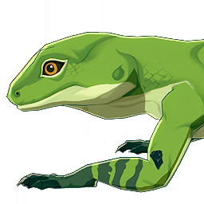

Green Pit Lizard
Resources

Material for crafting.
A carnivorous reptile, a common lizard in the green, but often mistakenly enters the town, can only hide in the flower bed or on the climbing frame. But because it is non-toxic, not picky eaters, and has a gentle temperament, such special visitors will also be taken in as pets by enthusiastic residents.